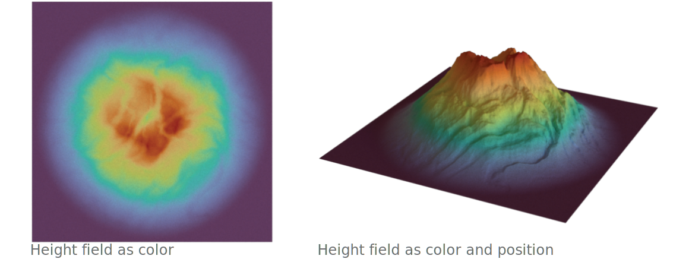
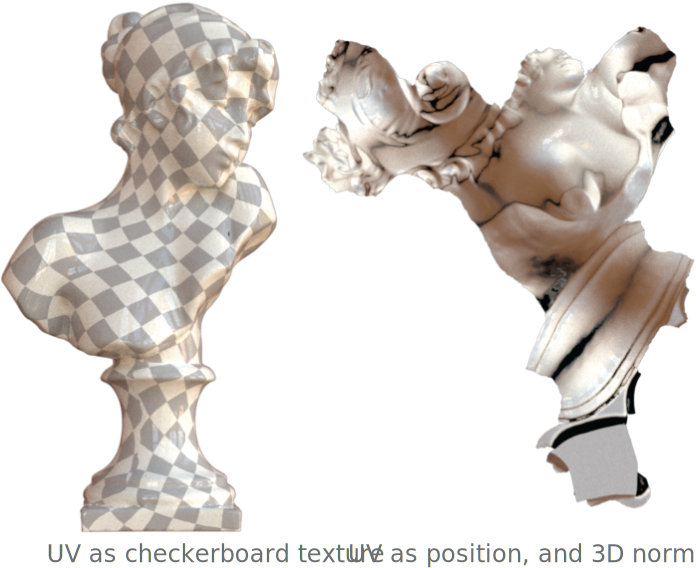
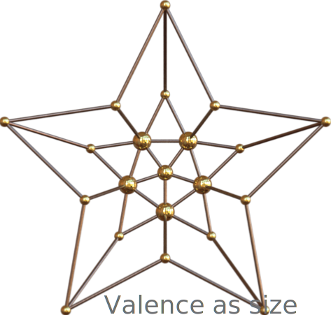
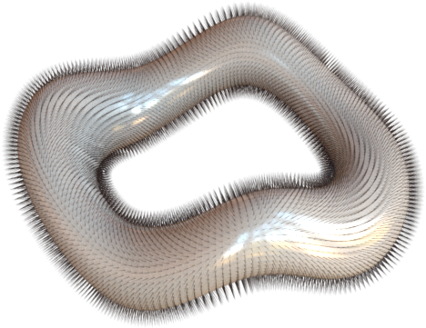
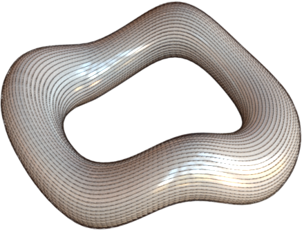
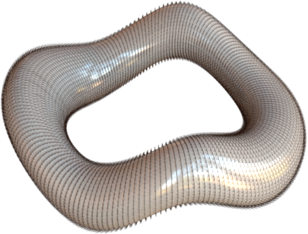

Channels¶
A channel represents a specific visual quantity that can be used to encode data. For example, 2D data visualization often encodes data in position, color, shape and size channels. Similarly in 3D data visualization, we can encode data in position, normal, size and vector field channels. In addition, we have the freedom of inventing new visual channels thanks to the diverse material models that modern rendering engines support. We have a separate guide for material-based channels. In this guide, we will mainly focus on non-material channels.

In the simple landscape example1 above, we use color (a visual channel defined in a material) to encode the height field attribute on the left, and use color + position to encode the same height field on the right.
Channels can be specified via Layer.channel() function.
# Assume `ch1` is a `Position` channel object,
# and `ch2` is a `Normal` channel object.
l = hkw.layer().channel(position=ch1, normal=ch2)
Position channel¶
Position channel represents the position of 3D marks. By default, the position channel will
use the vertex positions stored in the data frame. It is especially useful when multiple sets of
positions are available (e.g. animation or decimation).
| Channel | Type | Description |
|---|---|---|
data |
[AttributeLike][hakowan.scale.attribute.AttributeLike] | The position attribute |
# To specify an attribute as the position channel data:
ch = hkw.channel.Position(data = hkw.attribute(name = "attr_name"))
# A shorthand that is exactly the same as above.
ch = hkw.channel.Position(data = "attr_name")
Normal channel¶

Normal channel represents the normal vector field of a 3D surface. It has significant influence on
how the surface reflect lights. By default, normals will be computed from the 3D data frame. The
Normal channel is only relevant for Surface mark.
For example, a common technique to visualize UV is to show the 2D UV mesh along with the 3D normal field. The example2 on the right illustrate this technique (right) as well as visualizing UV using checkerboard texture (left).
| Channel | Type | Description |
|---|---|---|
data |
[AttributeLike][hakowan.scale.attribute.AttributeLike] | The normal attribute |
# To specify an attribute as the normal channel data:
ch = hkw.channel.Normal(data = hkw.attribute(name = "attr_name"))
# Shorthand. Same as above
ch = hkw.channel.Normal(data = "attr_name")
Size channel¶

Size channel represents the size of 3D marks. It is only relevant to Point and Curve marks.
For Point mark, size represents the radius of the point mark. For Curve mark, size represents
the radius of the curves.
On the simple star example to the right, the vertex valence of the graph is mapped to the size channel of the points. The edges are of uniform size.
| Channel | Type | Description |
|---|---|---|
data |
[AttributeLike][hakowan.scale.attribute.AttributeLike] | The size attribute |
# To sepcify an attribute as the size channel data:
ch = hkw.channel.Size(data = hkw.attribute(name = "attr_name"))
# Shorthand. Same as above
ch = hkw.channel.Size(data = "attr_name")
# To assign constant size field
ch = hkw.channel.Size(data = 0.1)
Note that Size channel uses the same unit as the Position channel.
Vector field channel¶
  
VectorField channel defines the data used for a vector field visualization. This channel is only
relevant when the mark is Curve as each vector is rendered using the curve geometry.
The example3 above shows the normal, tangent and bitangent vector field visualization in hair material.
| Channel | Type | Description |
|---|---|---|
data |
[AttributeLike][hakowan.scale.attribute.AttributeLike] | The attribute containing vector field data |
Here is a snippet for creating a VectorField channel.
# To specify an attribute as the vector field channel data.
ch = hkw.channel.VectorField(data = hkw.attribute(name = "attr_name"))
# Shorthand, same as above.
ch = hkw.channel.VectorField(data = "attr_name")
Note that each vector in the vector field is visualized as a b-spline curve. The vector field's
magnitude determines the curve length. The Size channel defines the thickness of the curve.
Vector field channel also takes the following parameters.
| Parameter | Type | Description |
|---|---|---|
refinement_level |
int |
The refinement level (default: 0) |
end_type |
str |
The end type of each vector (options: point (default), flat) |
style |
[CurveStyle][hakowan.channel.curvestyle.CurveStyle] | The curve style to use (default: None) |
-
3D model generated with Blender's A.N.T.Landscape add-on. ↩
-
3D model source: Bust of Sappho ↩
-
3D model generated with Blender. ↩